『種の黎明 — BIOSPHERE』は、魚類・両生類・鳥類・恐竜・哺乳類・節足動物から1系統を選び、六角形の生態地形を奪い合う3D RTSだ。プレイヤー1勢力 + AI5勢力、12分1本勝負。見た目は優雅な生態シミュレーションだが、中身は極めて硬質な数字のゲームで、勝ち筋はほぼ一本道である。
この攻略は、印象ではなく実測で書いた。このゲームは描画から独立した決定論エンジン（src/core/engine.js）を持っていて、同じseedなら同じ結果になる。そこで攻略仮説をそのままコードにして、seedを変えながらのべ1,092対戦と約40回の戦闘実験を回し、勝率の差が出たものだけをここに載せている。各章の表はすべてその出力だ。
12013311、難易度は断りのない限り「均衡する世界（normal）」、相手は標準AI5勢力。数値はこの版のもので、DSL（content/earth.habitat）が変われば変わる。人間同士の対戦バランスではなく、対AI戦の攻略である。
01勝ち方は実質ひとつしかない
ルール上の勝利条件は3つある。
- 生命の源（源泉）を3つ以上、90秒連続で保持する
- 最後の生存勢力になる
- 720秒（12分）到達時に繁栄度で1位
ではどれが実際に起きるのか。既存の72対戦ログを集計すると、答えははっきりしている。
| 決着の形 | 件数 | 割合 | 平均決着時間 |
|---|---|---|---|
| 生命の源を守り抜いた | 66 | 91.7% | 450.8秒 |
| 制限時間で最も繁栄した系統 | 6 | 8.3% | 720秒 |
| 最後まで生き残った系統 | 0 | 0% | — |
全滅勝ちは起きない。時間切れも1割以下。このゲームは事実上「源泉3つを90秒保つゲーム」であり、平均7分半で決着する。内政も戦闘も進化も、すべて源泉3つを90秒から逆算して決めていい。
盤面と源泉の位置
標準マップは半径6の六角形で127区画。中心と6方向へ水辺の帯が走り、6勢力が等距離の水辺から始まる。生命の源は7つ。つまり3つ取れば勝利ラインだが、7つを6勢力で奪い合うので、1勢力が3つ持つと残りは4つ——構造的に、誰かが3つ揃えた瞬間から全員がその1勢力を止めに行く展開になる。
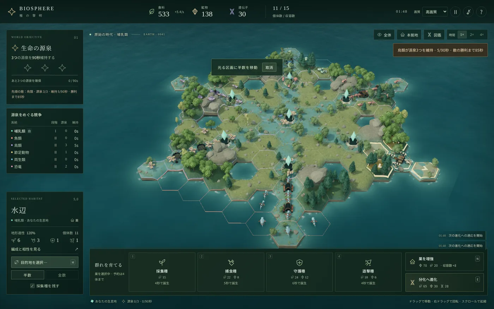
勝利カウンタには重要な仕様がある。交戦中の源泉は保持数に数えられない。そして保持数が3を下回った瞬間、積み上げた秒数は0に戻る。部分的な減点ではなく、完全リセットだ。
| 状態 | 保持秒数 |
|---|---|
| 源泉3つを保持して60秒経過 | 60.0秒 |
| 敵の捕食種 1体 が源泉の1つへ到着（交戦開始） | 0.0秒 |
敵の90秒カウントは、たった1体で止まる。勝てる必要はない。源泉タイルへ到着して交戦状態を作れば、その瞬間にカウントは0へ戻る。相手が「勝利まで残り10秒」でも、遊撃種1体が間に合えばご破算にできる。逆に自分が保持する側になったら、源泉に隣接する敵タイルからの移動時間（後述の表で2〜6秒）を数えて、常に迎撃できる兵力を置いておくこと。
02採集種7体の壁 — この記事で一番大事な章
結論から書く。巣ごとに採集種を7体まで増やしてから戦闘役割を作る。これだけで勝率が変わる。
検証方法はこうだ。標準AIの判断ロジックをそのままプレイヤー側にコピーし、「巣で維持する採集種の目標数」だけを変えて、同じseed・同じ相手（標準AI5勢力）で24戦ずつ回した。他の判断（いつ攻めるか、どこを狙うか、いつ進化するか）は完全に同一である。
| 巣ごとの採集種目標 | 勝利/戦 | 勝率 | 平均繁栄度 | 平均源泉数 | 平均個体数 |
|---|---|---|---|---|---|
| 2体 | 0/24 | 0% | 212 | 0.5 | 11.4 |
| 4体 （＝標準AIと同じ） | 2/24 | 8.3% | 300 | 0.88 | 20.4 |
| 6体 | 14/24 | 58.3% | 688 | 3.33 | 58.9 |
| 7体 | 24/24 | 100% | 1009 | 5.08 | 104.4 |
| 8体 | 22/24 | 91.7% | 973 | 5.0 | 100.8 |
| 10体 | 23/24 | 95.8% | 1128 | 5.38 | 135.4 |
| 採集種しか作らない | 0/24 | 0% | 480 | 0.17 | 146.2 |
4体と7体の間に断層がある。勝率 8.3% → 100%、最終個体数 20 → 104。これは「やや有利」ではなく別のゲームだ。そして採集種だけでは0%——戦闘役割を作らなければ源泉を1つも維持できない（平均源泉0.17）。
なぜ7体なのか — 断層の正体
偶然ではない。繁殖の食料消費レートと、採集種1体の食料生産レートが、ちょうど7体で交差する。
採集種1体の食料生産は 0.5 × 地形の食料係数 × 地形適性。開始区画は適性が1.2に固定されるので、水辺（食料係数1.2）の巣なら 1体あたり毎秒0.72。ここから個体の維持費 毎秒0.025 を引いて、純増は 0.695/秒。
一方、巣が途切れずに繁殖し続けるのに必要な食料は、役割ごとにこうなる。
| 役割 | 食料 | 鉱物 | 繁殖秒 | 必要な食料/秒 | 必要な採集種の数 |
|---|---|---|---|---|---|
| 採集種 | 15 | 0 | 4 | 3.75 | 5.4体 |
| 捕食種 | 22 | 8 | 5 | 4.40 | 6.3体 |
| 守護種 | 24 | 12 | 6 | 4.00 | 5.8体 |
| 遊撃種 | 18 | 6 | 4 | 4.50 | 6.5体 |
一番食う遊撃種を連続生産するには毎秒4.5の食料が要り、採集種は1体0.695しか生まない。4.5 ÷ 0.695 = 6.5体。切り上げて7体——ここが、巣が「止まらない」ラインである。
6体では毎秒4.17で、わずかに足りない。繁殖が数秒ずつ詰まり、その遅れが拡張の遅れになり、領土が増えないので収容数も収入も増えず、じわじわ差が開く。実測で6体が58.3%と中途半端なのは、seedによってこの詰まりを取り返せたり取り返せなかったりするからだ。
「採集種をいっぱい作る」だけでは勝てない。実測の最下段、採集種しか作らない方針は個体数146と最多なのに勝率0%だ。採集種は攻撃3・体力24で、しかも三すくみの補正を一切持たない（後述）。7体という数字は「内政の上限」ではなく「戦闘役割を作り続けるための土台」であり、7体を超えたぶんの資源は戦力に回すのが正しい。
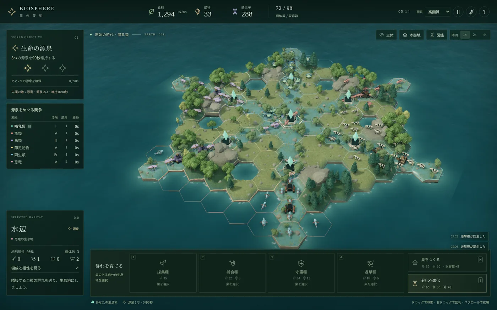
全系統で効く
これは哺乳類だけの話ではない。全6系統で、標準AIと同じ方針（採集4体）と、採集種を1.5倍にした方針（採集6体）を12戦ずつ比べた。6体でこれだけ変わる——7体にすると全系統が勝率100%に達する（第7章）。
| 系統 | 採集4体 | 採集6体 | 差 | 平均源泉数 | 平均最終段階 |
|---|---|---|---|---|---|
| 魚類 | 16.7% | 50.0% | +33.3 | 3.25 | 4.92 |
| 両生類 | 41.7% | 91.7% | +50.0 | 5.00 | 5.00 |
| 鳥類 | 16.7% | 66.7% | +50.0 | 3.75 | 5.00 |
| 恐竜 | 0% | 100% | +100.0 | 5.50 | 5.00 |
| 哺乳類 | 8.3% | 66.7% | +58.4 | 3.92 | 4.83 |
| 節足動物 | 8.3% | 50.0% | +41.7 | 3.17 | 4.92 |
特に恐竜が 0% → 100% という極端な変化を見せる。恐竜は繁殖倍率0.82（繁殖時間が1.22倍かかる）で、標準AI方針では内政が回らず何もできないまま轢かれる。しかし採集種を厚くすると、遅い繁殖を食料の余剰で押し切れるようになり、攻撃倍率1.22の暴力が刺さり始める。「弱い系統」ではなく「内政が要る系統」だったということだ。
難易度は関係ない
| 難易度 | 勝利/戦 | 勝率 | 平均繁栄度 |
|---|---|---|---|
| やさしい（easy） | 24/24 | 100% | 883 |
| 均衡する世界（normal） | 24/24 | 100% | 1009 |
| 厳しい世界（hard） | 24/24 | 100% | 934 |
難易度が変えるのはAIの思考間隔（normalの1.8倍〜0.7倍）と、AIが敵地へ攻め込み始める時刻（easy 70秒 / normal・hard 35秒）だけで、AIの内政方針は変わらない。つまり難易度を上げてもAIは採集種4体のままで、この穴は塞がらない。hardで負けるとしたら、それは難易度ではなく序盤の事故（開始位置が強い勢力に挟まれた等）である。
03三すくみは進化5段階より強い
戦闘役割は4つ。捕食種は遊撃種に強く、遊撃種は守護種に強く、守護種は捕食種に強い。採集種はこの輪に入らない。有利な相手への攻撃倍率は counterBonus = 2.4、つまり2.4倍である。この数字がこのゲームの戦闘のすべてを決めている。
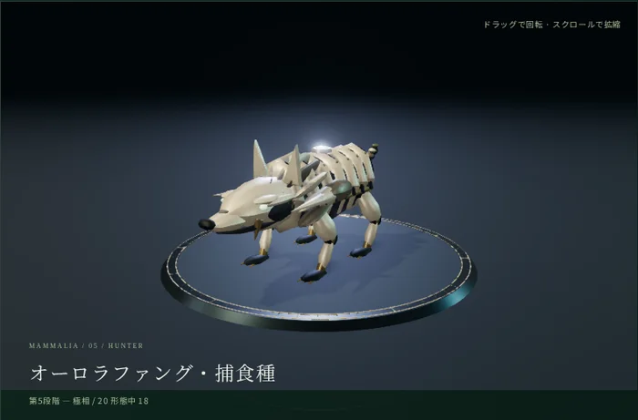
遊撃種に2.4倍
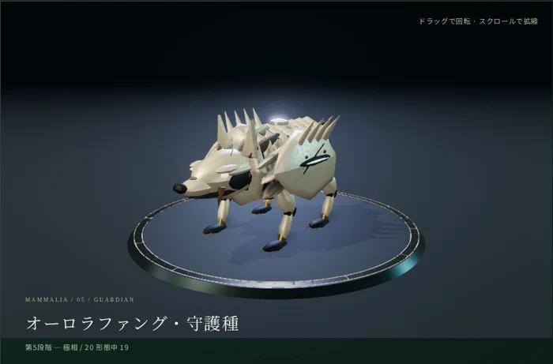
捕食種に2.4倍
守護種に2.4倍
10対10の総当たり
同じ系統・同じ段階・巣なしの区画で、攻撃側10体が守備側10体を攻めたときの決着。セルは勝った側の残存数。
| 攻撃側 ＼ 守備側 | 採集種 | 捕食種 | 守護種 | 遊撃種 |
|---|---|---|---|---|
| 採集種 | 負 −3 | 負 −9 | 負 −9 | 負 −8 |
| 捕食種 | 勝 +9 | 負 −3 | 負 −8 | 勝 +9 1.6s |
| 守護種 | 勝 +9 | 勝 +8 3.2s | 負 −3 | 負 −5 |
| 遊撃種 | 勝 +8 | 負 −9 1.4s | 勝 +3 7.0s | 負 −3 |
この表からは、攻略上きわめて重要な3つの事実が読める。
① 同じ役割・同じ数なら、守る側が勝つ
対角線がすべて「攻撃側の負け」になっている。守備側には 1.08 + 巣段階 × 0.08 の被ダメージ軽減があるからだ。互角の戦力で殴りに行くのは、それだけで負け手である。攻めるなら相性か数か段階で上回ること。
② 三すくみは対称ではない — 捕食種の狩りが突出して強い
同じ2.4倍でも、結果はまるで違う。捕食種が遊撃種を狩ると1.6秒で9体残しの圧勝。一方、遊撃種が守護種を倒すのは7.0秒かかって3体しか残らない辛勝だ。攻撃力と体力の組み合わせが違うためで、「有利を取ったときの効率」を計算するとこうなる。
| 組み合わせ | 実効攻撃 | 相手の体力 | 効率 | 体感 |
|---|---|---|---|---|
| 捕食種 → 遊撃種 | 28.8 | 23 | 1.25 | 一方的な虐殺 |
| 守護種 → 捕食種 | 19.2 | 30 | 0.64 | 確実に勝てる |
| 遊撃種 → 守護種 | 19.2 | 45 | 0.43 | 辛勝、被害は大きい |
遊撃種を単体で前線に置かない。捕食種に見つかった瞬間に消える（10体が1.4秒で全滅する）。遊撃種は「守護種が守る区画をこじ開ける鍵」か「空き地と源泉を素早く押さえる足」であって、殴り合いの主力ではない。逆に、敵が遊撃種を並べてきたら捕食種を送るだけで勝てる。
③ 相性を数で覆すには1.8倍が要る
| 攻撃側 | 結果 | 残存 |
|---|---|---|
| 捕食種 10体 | 防衛される | 守備側 8体 |
| 捕食種 14体 | 防衛される | 守備側 5体 |
| 捕食種 16体 | 防衛される | 守備側 2体 |
| 捕食種 18体 | 奪取成功 | 攻撃側 8体 |
| 捕食種 24体 | 奪取成功 | 攻撃側 17体 |
不利な相性で攻めるには1.8倍の頭数が要る。逆に有利な相性なら、同数10体でも守備補正を突き破って奪取できる（遊撃種10 → 守護種10で攻撃側3体残り）。役割を1つ変えるだけで、必要な兵力が半分になると覚えておけばいい。
相性 vs 進化 — どちらが強いか
進化は5段階あり、最終段階の攻撃倍率は1.72倍、体力は√1.72＝1.31倍になる。実効的な戦闘力は約2.25倍。では相性2.4倍と正面衝突させるとどうなるか。
| 攻撃側の段階 | 結果 | 残存 |
|---|---|---|
| ① 原始 | 負け | 守備側 3体 |
| ② 分化 （1段階の差） | 勝ち | 攻撃側 4体 |
| ③ 適応 | 勝ち | 攻撃側 6体 |
| ⑤ 極相 | 勝ち | 攻撃側 7体 |
| 攻撃側 | 結果 | 残存 |
|---|---|---|
| ③ 適応の捕食種 10体 | 防衛される | 守備側 6体 |
| ⑤ 極相の捕食種 10体 | 防衛される | 守備側 4体 |
4段階ぶんの進化差でも、不利な相性は覆せない。最強の極相・捕食種10体が、最弱の原始・守護種10体に負ける。逆に言えば、まだ原始段階でも、相性さえ合っていれば格上の群れを止められる。「進化で負けているから勝てない」は誤りで、正しくは「役割を間違えているから勝てない」。
混成された陣地は、正面からはまず抜けない
捕食種10＋守護種10（巣1段階）が守る区画へ、20体の攻撃側をぶつけた結果。
| 攻撃側の編成 | 守備側の残存 | 戦闘時間 | 評価 |
|---|---|---|---|
| 遊撃種 20 | 17体 | 2.2秒 | 溶けるだけ |
| 捕食種 20 | 15体 | 3.8秒 | 守護種に阻まれる |
| 捕食10＋遊撃10 | 16体 | 3.0秒 | 中途半端 |
| 捕食7＋守護6＋遊撃7 | 12体 | 5.8秒 | まだ足りない |
| 守護10＋遊撃10 | 9体 | 7.6秒 | 最善だが、それでも失敗 |
混成陣地が堅いのは、ダメージが相手の役割構成比に応じて分配されるためだ。守護種だけの陣地なら遊撃種の2.4倍が全弾命中するが、半分が捕食種なら遊撃種の攻撃は半分しか有利を取れず、残り半分は捕食種に返り討ちにされる。
敵の主拠点を正面から抜こうとしてはいけない。同数では2倍あっても足りない。取るべき手は3つ——(1) 敵が出撃して手薄になった隙を突く、(2) 拠点ではなく源泉だけを狙う、(3) 相手が単一役割に偏った群れを送り出してきたところを、カウンター役割で野戦で潰す。
採集種は「壁」として機能する
捕食種5体だけで遊撃種10体を攻めた場合と、採集種5体を足して10体で攻めた場合の比較。
| 攻撃側の編成 | 戦闘後の捕食種 | 戦闘時間 |
|---|---|---|
| 捕食種5のみ | 2体 | 4.4秒 |
| 捕食種5 ＋ 採集種5 | 4体 （＋採集種4体も生存） | 2.8秒 |
採集種は相性補正を持たないが攻撃3・体力24はあり、ダメージの分散先になる。結果、主力の捕食種の生存数が2体→4体に増えた。緊急防衛では採集種を戦列から外さないほうが、むしろ戦闘役割が生き残る。
ただし平時は逆。移動命令の「採集種を残す」チェックは常にONが基本だ。採集種を前線に送るとその区画の食料収入が丸ごと消え、第2章の7体ラインが崩れる。壁として使うのは「自分の巣が攻められている」ときだけ。
系統ごとの素の戦闘力
| 系統 | 攻撃倍率 | 結果 | 残存 |
|---|---|---|---|
| 恐竜 | 1.22 | 守備補正を押し切って勝利 | 攻撃側 3体 |
| 鳥類 | 1.08 | 惜敗 | 守備側 1体 |
| 哺乳類 | 1.04 | 敗北 | 守備側 3体 |
| 魚類・両生類・節足動物 | 0.96 | 敗北 | 守備側 2〜4体 |
恐竜だけが「同数・互角の条件で殴り勝てる」系統である。他の系統は、地形・相性・段階・数のどれかで上回らないと攻め手にならない。なお地形適性も戦闘に効く（戦闘係数 = 0.75 + min(1.5, 適性) × 0.25）が、最良1.09〜最悪0.75で最大1.45倍。相性2.4倍には遠く及ばない。それでも、得意な地形で迎え撃つだけで1割前後の差が付く。
04源泉の経済学 — 進化は源泉なしには完走できない
生命の源（源泉）は勝利条件であると同時に、このゲームで最大のDNA供給源である。DNAの収入源は3つしかない。
| 収入源 | DNA/秒 | 条件 |
|---|---|---|
| 個体のいる生息地 | 0.06 | 1体でもいれば。無人の領土は0 |
| 巣（1段階につき） | 0.08 | 無人でも入る |
| 源泉（個体がいる場合） | +0.30 | 通常の生息地の5倍 |
そして極相（第5段階）までに必要なDNAは190。これを12分で割ると——
| 進化 | 食料 | 鉱物 | DNA | 所要秒 | 累計DNA |
|---|---|---|---|---|---|
| ① 原始 → ② 分化 | 65 | 30 | 28 | 12 | 28 |
| ② 分化 → ③ 適応 | 91 | 42 | 39 | 16 | 67 |
| ③ 適応 → ④ 繁栄 | 124 | 57 | 53 | 20 | 120 |
| ④ 繁栄 → ⑤ 極相 | 163 | 75 | 70 | 24 | 190 |
| 合計 | 443 | 204 | 190 | 72 | — |
720秒でDNA190を稼ぐには、平均 0.264 DNA/秒 が必要。開始時の手持ちは巣1つ＋生息地1つで 0.14/秒 しかない。このままでは絶対に届かない。
源泉を1つ持てば +0.30。それだけで必要ラインを超える。つまり源泉は勝利条件であると同時に、進化の燃料タンクでもある。逆に源泉を1つも取れない試合は、進化レースでも自動的に負ける。
無人の領土はDNAを生まない
領土を広げたつもりで、全部の群れを次の区画へ動かしてしまい、通ってきた区画が無人になっている——このとき、その区画のDNA（0.06/秒）も食料も鉱物も入っていない。食料と鉱物は採集種の数で決まり、DNAは1体でもいるかで決まる。
対策はシンプルで、移動は常に「半数」を基本にすること。全数移動は、敵拠点へ決戦を挑むときか、明らかに安全な後方を畳むときだけに限る。
源泉の守り方
源泉は狙われる。そして第1章で見たとおり、敵が1体到着するだけで自分の90秒カウントは0に戻る。したがって源泉の防衛は「落とされないこと」ではなく「交戦させないこと」が目標になる。
- 源泉そのものに戦力を置く。隣に置いて「来たら反撃」では遅い。到着＝交戦＝カウントリセットなので、到着前に潰すか、到着した瞬間に瞬殺できる戦力が源泉の上に必要。
- 混成で置く。第3章のとおり、守護種＋捕食種の組み合わせは正面から抜きにくい。単一役割だとカウンターを1種類ぶつけられて崩れる。
- 巣を建てる。被ダメージ軽減が1.08→1.24になるうえ、収容数+8と、無人でもDNA +0.08/秒が付く。源泉に巣は強い。
- 3つではなく4つ目を取る。3つちょうどでは、1つ削られた瞬間にカウントが0になる。4つ目は保険であり、同時に相手の勝利条件を潰す妨害でもある（源泉は全部で7つしかない）。
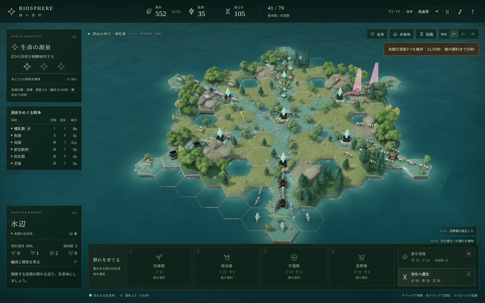
勝ち筋のパターン
実測で勝率100%を出した方針の内訳を見ると、平均で源泉5.08個・領土は盤面の大半・最終段階4.96に達していた。これは「3つ確保して守り切る」ではなく、「圧倒的に広げた結果、源泉が勝手に5つ集まる」形である。
源泉に直行するより、内政で膨らんでから面で押すほうが強い。実測でも「源泉を最優先」に振った方針（87.5%）は、素直に採集7体だけを守った方針（100%）に負けている。源泉は目的地ではなく、拡張の結果として通過する場所と考えるのが正しい。
05地形・収容数・移動時間
どの地形を取るか
| 地形 | 食料係数 | 鉱物係数 | 収容 | 食料/秒・体 | 鉱物/秒・体 | 採集種15の回収 |
|---|---|---|---|---|---|---|
| 森林 | 1.3 | 0.35 | 15 (+7) | 0.780 | 0.076 | 19.9秒 |
| 海洋 | 1.3 | 0.45 | 16 (+7) | 0.780 | 0.097 | 19.9秒 |
| 水辺 | 1.2 | 0.55 | 16 (+7) | 0.720 | 0.119 | 21.6秒 |
| 草原 | 1.1 | 0.50 | 16 (+7) | 0.660 | 0.108 | 23.6秒 |
| 高地 | 0.6 | 1.10 | 12 (+5) | 0.360 | 0.238 | 44.8秒 |
高地は鉱物が2〜3倍出るが、食料が半分・収容数も最小。第2章の「採集種7体」ラインを高地で満たすには、水辺の倍の採集種が要る計算になる（高地の純収入は0.335/秒なので、遊撃種の連続生産には13.4体必要＝収容数を超えている）。
高地は内政の主軸にしてはいけない。鉱物が足りなくて巣が建てられないときに1〜2枚持つ「鉱山」であり、拠点ではない。鳥類だけは適性1.4で高地の食料が0.84/秒まで上がるので例外的に運用できる。
人口上限の増やし方
収容数は Σ(地形の収容 × 0.45 を四捨五入) + 巣段階 × 8。開始時は水辺1枚（+7）と巣1（+8）で15。初期個体が9なので、残り枠は6しかない。
| 枠を増やす手段 | コスト | 増える収容数 | 1枠あたり | 備考 |
|---|---|---|---|---|
| 中立地へ進出（水辺・草原・海洋） | 食料10 | +7 | 食料1.43 | 収入源も増える |
| 新しい巣を建てる | 食料20＋鉱物35 | +8 | 食料2.5＋鉱物4.4 | 繁殖口も増える |
| 巣を増強（2段階目） | 食料20＋鉱物70 | +8 | 食料2.5＋鉱物8.8 | 防御は上がる |
土地を取るのが圧倒的に安い。食料10で収容+7、しかも収入と防衛線が増える。巣の増強（鉱物70）は、源泉を守る区画以外ではほとんど割に合わない。序盤の鉱物は、まず2つ目・3つ目の新しい巣に使うこと。巣が増えれば繁殖の並列数が増え、第2章の「7体」を複数箇所で同時に回せる。
移動時間表
移動時間は 距離 × 3.6 ÷ (群れの平均速度 × 系統速度)。混成すると平均速度で動くので、守護種を混ぜた群れは鈍足になる。
| 系統 | 採集種 | 捕食種 | 守護種 | 遊撃種 | 移動距離 |
|---|---|---|---|---|---|
| 鳥類 | 2.67 | 2.42 | 3.81 | 1.67 | 2区画（第2段階〜） |
| 魚類 | 3.00 | 2.73 | 4.29 | 1.88 | 1区画 |
| 哺乳類 | 3.33 | 3.03 | 4.76 | 2.08 | 1区画 |
| 節足動物 | 3.43 | 3.12 | 4.90 | 2.14 | 1区画 |
| 両生類 | 3.60 | 3.27 | 5.14 | 2.25 | 1区画 |
| 恐竜 | 4.09 | 3.72 | 5.84 | 2.56 | 1区画 |
鳥類は第2段階から2区画を1回の移動でまたげる。遊撃種なら2区画を3.33秒＝1区画あたり1.67秒で、全系統中もっとも速い。敵の源泉カウントを妨害する遊撃部隊としては最良で、鳥類の主用途はここにある。
季節
60秒ごとに3つの気候が巡る。雨期は水辺の食料1.15倍、乾期は水辺0.75倍・草原0.85倍。水辺を主力にしている場合、乾期（試合開始から120〜180秒、300〜360秒…）は収入が4分の3になる。第2章の7体ラインは乾期には満たせないので、乾期の直前に繁殖予約を埋めておくと詰まりを減らせる。森林と海洋は季節の影響を受けない——これが森林・海洋の隠れた強みである。
06AIの穴を5つ突く
対AI戦である以上、AIの判断規則を知っていることが最大の武器になる。実装を読むと、AIには利用できる規則性が5つある。
穴① 採集種を4体でやめる
AIは巣の採集種が4体に達すると、以降は戦闘役割しか作らない。第2章のとおり、これは繁殖を切らさない下限（6.5体）を下回っている。つまり全AIは、恒常的に内政が詰まった状態で戦っている。プレイヤーが7体にするだけで、中盤以降の物量が5倍（個体数20 → 104）になる。これがこのゲーム最大の穴だ。
穴② 相性を計算せずに攻めてくる
AIが「攻めるかどうか」を決める式は 自軍の攻撃力合計 ≧ 敵の攻撃力合計 × 1.15。この攻撃力合計は役割ごとの素の攻撃値を足しただけで、三すくみの2.4倍を一切考慮していない。
守護種（攻撃8）を並べた区画は、AIの目には「弱く」映る。捕食種（攻撃12）より数字が小さいからだ。そこへAIは捕食種主体の群れを送り込んでくる——守護種の2.4倍カウンターが待っている区画に。
前線の防衛は守護種を厚めに。AIを誘い込んで、有利な相性で削り取るのが最も効率のいい戦力交換になる。
穴③ 開始35秒間は絶対に攻めてこない
AIには「敵地へは 時間 < 35秒（easyは70秒）の間は向かわない」という制約がある。実測した最初の戦闘発生時刻はこうだ。
| 難易度 | 最速 | 中央値 | 最遅 |
|---|---|---|---|
| やさしい | 75.6秒 | 84.8秒 | 93.2秒 |
| 均衡する世界 | 52.0秒 | 62.4秒 | 72.2秒 |
| 厳しい世界 | 45.8秒 | 57.4秒 | 85.8秒 |
最初の45〜50秒は完全に安全。この時間を1秒も防衛に使ってはいけない。全部、採集種と拡張に注ぐ。
穴④ 源泉に7体未満だと、そこから動けない
AIには「源泉区画にいる群れは、7体未満なら出撃しない」という規則がある。裏を返すと、AIが源泉を取ると、そこに7体溜まるまで軍は釘付けになる。source を1つ取らせてから他所を攻めると、AIの反応が鈍る。
穴⑤ 進化を貯め始めると繁殖が止まる
AIは「時間40秒以降、DNAが必要量の80%に達したら」進化に入り、その間は進化費用を割ってしまう繁殖を見送る。AIが進化した直後（進化演出が出た直後）は、繁殖予約が薄く、資源も空である。ここが最大の攻め時になる。画面左の「源泉をめぐる競争」パネルで各勢力の段階が上がった瞬間を見ておくといい。
AIは巣に採集種を残して軍だけを出す（移動時の「採集種を残す」に相当）判断を必ず行い、群れが5体以下なら全数、それ以上なら半数を送る。この部分の判断は堅実で、雑に全数で突っ込んで内政を空にするのはプレイヤー側の典型的なミスのほうだ。
07系統別攻略
まず地図の構造を知る
標準マップの生成規則を読むと、源泉の位置はランダムではない。中心と、中心から3区画の位置にある6つ——計7つで、そのすべてが水辺の帯の上にある。そして6勢力の開始区画も同じ水辺の帯の上、中心から5区画の位置に置かれる。
自分の開始区画からまっすぐ中心へ向かって2区画進んだ場所に、必ず源泉が1つある。これが「自分の源泉」。隣の勢力の源泉までは3区画、中心の源泉までは5区画。
つまり全員の初動は同じ——目の前の源泉を取り、次に中心か隣の源泉を取りに行く。3つ揃えるには、必ず誰かとぶつかる設計になっている。
源泉がすべて水辺であることの帰結は大きい。水辺の適性が、そのまま源泉での戦闘力になるからだ（戦闘係数 = 0.75 + 適性 × 0.25）。
| 系統 | 水辺適性 | 源泉での戦闘係数 | 攻撃倍率 | 繁殖倍率 | 速度 |
|---|---|---|---|---|---|
| 両生類 | 1.50 | 1.125 | 0.96 | 1.12 | 1.00 |
| 鳥類 | 1.10 | 1.025 | 1.08 | 1.08 | 1.35 |
| 節足動物 | 1.05 | 1.013 | 0.96 | 1.38 | 1.05 |
| 恐竜 | 0.95 | 0.988 | 1.22 | 0.82 | 0.88 |
| 哺乳類 | 0.95 | 0.988 | 1.04 | 1.00 | 1.08 |
| 魚類 | 0.85 | 0.963 | 0.96 | 1.00 | 1.20 |
採集種の必要数は系統で違う
第2章の「7体」は繁殖倍率1.0の系統の値だった。繁殖が速い系統は食料を早く消費するので、必要な採集種も増える。理論値は 4.5 × 繁殖倍率 ÷ 0.695。実測（各12戦）と並べるとこうなる。
| 系統 | 繁殖倍率 | 理論値 | 採集5 | 採集6 | 採集7 | 採集9 |
|---|---|---|---|---|---|---|
| 恐竜 | 0.82 | 5.3体 | 25% | 100% | 100% | 100% |
| 魚類 | 1.00 | 6.5体 | 41.7% | 50% | 100% | 100% |
| 哺乳類 | 1.00 | 6.5体 | 8.3% | 66.7% | 100% | 91.7% |
| 鳥類 | 1.08 | 7.0体 | 33.3% | 66.7% | 100% | 100% |
| 両生類 | 1.12 | 7.3体 | 75% | 91.7% | 100% | 100% |
| 節足動物 | 1.38 | 8.9体 | 33.3% | 50% | 100% | 91.7% |
理論値と実測の閾値はおおむね一致する（恐竜だけ6体で足り、他は7体が必要）。節足動物は理論値8.9に対して7体で100%に届くが、これは繁殖の速さで拡張が早く回り、2枚目3枚目の土地の収入が先に入るためだ。
どの系統でも、巣の採集種は7体。恐竜だけ6体でも足りる。迷ったら7で固定してよく、実測では全系統がそれで勝率100%に達している。
系統ごとの方針
源泉での戦闘係数1.125は全系統最高。源泉がすべて水辺であるこのゲームの設計と、水辺適性1.5が完全に噛み合っている。繁殖倍率1.12も高く、食料収入も水辺なら1体あたり0.875/秒（適性1.5）まで伸びる。
方針：水辺の帯から出ない。目の前の源泉を取り、そのまま帯沿いに中心へ、あるいは隣の源泉へ伸ばす。陸に上がる必要はほとんどなく、上がるとしても食料稼ぎの森林を1〜2枚。「水辺だけで勝てる系統」であり、初心者が最初に勝ち方を覚えるのに向いている（実測：採集6体運用でも91.7%）。
弱点：攻撃倍率0.96と高地に入れない点。敵拠点の正面突破は無理なので、源泉を押さえて守り切る形に徹する。
攻撃倍率1.22は唯一、同数・互角の条件で守備補正を押し切って勝てる数字。第3章の実測で、同数の殴り合いに勝ったのは恐竜だけだった。一方で繁殖倍率0.82・速度0.88という重さがあり、AI同士の対戦では勝率20.8%、標準AIの内政方針では勝率0%という極端な系統。
方針：採集種は6体で足りる（繁殖が遅いぶん食料消費も遅い）。序盤は草原（適性1.3）を押さえて内政を作り、繁殖の遅さを食料の余剰で押し切る。数が揃ってからは、相性を気にせず正面から殴れる唯一の系統として振る舞える。実測では採集6体運用で12戦全勝。
弱点：移動が全系統最遅（守護種は1区画5.84秒）。源泉の妨害合戦で後手に回るので、妨害されない位置取り＝源泉を面で囲う展開を作る。
AI同士の対戦では勝率5.6%と全系統最弱だが、これは標準AIが鳥類の唯一にして最大の武器を使えないためだ。その武器とは第2段階からの2区画移動。遊撃種なら2区画を3.33秒、1区画あたり1.67秒で、全系統中もっとも速く盤面を渡る。
方針：最優先で第2段階へ進化する（DNA28）。飛行が解禁された瞬間から、敵の源泉カウントを妨害し続ける遊撃部隊を1〜2体単位で運用できる。第1章のとおり、敵の90秒カウントは1体の到着で0に戻る。2区画をまたげる鳥類は、隣接していない源泉にも届く——これは他の5系統にできない。
弱点：海洋に入れない。高地適性1.4は魅力だが、高地は食料0.6係数なので拠点にはしない（適性1.4でも0.84/秒）。実測では採集7体で12戦全勝。AI相手の勝率5.6%という数字に騙されないこと。
繁殖倍率1.38は全系統最高で、繁殖時間が他系統の0.72倍になる（遊撃種なら2.9秒で1体）。個体の攻撃倍率は0.96と低いので、第3章の「相性を数で覆すには1.8倍」を実際に用意できる唯一の系統と言える。
方針：採集種は7体（理論上は9体近く要るが、拡張の速さが補う）。森林（適性1.25）を軸に巣を増やし、収容数を先に広げる。人口上限に張り付いたら即座に領土を増やすこと——繁殖が速すぎて枠が先に尽きるのがこの系統の失速パターン。
弱点：1体あたりが弱いので、相性で不利を取ると数の優位が消える。前線は必ず役割を混ぜる。
攻撃1.04・繁殖1.00・速度1.08と、すべてが平均よりわずかに上。突出した武器はないが穴もなく、他の系統を評価するときの物差しになる。森林・草原の両方で適性1.2を持ち、拡張先を選びやすいのが実際の強み。
方針：採集種7体を守り、森林と草原を貪欲に取る。源泉は水辺適性0.95＝戦闘係数0.988なので、両生類と源泉を取り合うと不利。陸側から源泉を包囲する形を作り、水辺の上で正面から殴り合わないようにする。
弱点：特化がないぶん、相手の得意地形での消耗戦に弱い。採集5体だと勝率8.3%まで落ち、内政の失敗が最も露骨に響く系統でもある。
海洋と水辺にしか定着できない。盤面の外周リングはほぼ海洋なので土地は余っているが、内陸を通れないため移動経路が水辺の帯に限定される。海洋の食料係数1.3 × 適性1.35で1体0.853/秒という最高効率の内政を持ち、速度1.20も上位。
方針：開始区画の脇は海洋になる（系統に応じて自動的に配置される）ので、そこを早く押さえて内政を立てる。海の内政で膨らませ、水辺の帯を通って源泉へ——という一本道。水辺適性0.85＝源泉での戦闘係数0.963は全系統最低なので、源泉での正面戦闘は避け、数を揃えてから一気に取る。
弱点：内陸の源泉包囲ができず、経路が読まれやすい。妨害部隊も水辺しか通れないため、敵の源泉カウントを止めに行く速度で他系統に劣る。実測では採集7体で12戦全勝しており、弱くはない。
| 系統 | AI同士（採集4体） | プレイヤー操作（採集7体） | 差 |
|---|---|---|---|
| 両生類 | 23.6% | 100% | +76.4 |
| 魚類 | 22.2% | 100% | +77.8 |
| 恐竜 | 20.8% | 100% | +79.2 |
| 哺乳類 | 15.3% | 100% | +84.7 |
| 節足動物 | 12.5% | 100% | +87.5 |
| 鳥類 | 5.6% | 100% | +94.4 |
左列は6勢力すべてが同一のAI方針で戦った場合の統計で、系統の強弱ではなく「標準AIの方針との相性」を表している。右列は同じ相手に対し、プレイヤー側だけが採集種7体で戦った結果。系統の差より、内政方針の差のほうが桁違いに大きいことが分かる。
08実戦タイムラインとチェックリスト
ここまでの実測を1本の手順に落とす。哺乳類・均衡する世界・標準マップを想定しているが、骨格は全系統で共通である。
-
0:00 — 0:45 ／ 完全に安全な時間
採集種だけを作る
AIは最速でも45秒までは攻めてこない。開始時の巣で採集種を予約できるだけ予約する（予約は4体まで）。初期の捕食3・守護1・遊撃1はそのまま巣に置いておく。この45秒で戦闘役割を作るのは、後半の物量を捨てているのと同じ。
-
0:20 — 1:30 ／ 拡張
隣の中立地へ「半数」を送る（採集種を残すはON）
中立地への進出は食料10で収容+7。巣より安い。得意地形（哺乳類なら森林・草原）を優先し、源泉の方向へ伸ばす。全数移動は禁止——通過した区画が無人になると収入もDNAも止まる。
-
1:00 — 2:30 ／ 2つ目・3つ目の巣
鉱物は「巣の増強」ではなく「新しい巣」に使う
鉱物35で新設（収容+8・繁殖口+1）、鉱物70で増強（収容+8のみ）。序盤は新設が倍のコスト効率。巣が増えたらそれぞれの巣で採集種7体を目指す。ここが第2章の本体。
-
1:30 — 3:00 ／ 最初の源泉
源泉を1つ確保して、そこに戦力を置いたまま動かさない
DNA +0.30/秒が入り、進化レースに乗る。守りは捕食種＋守護種の混成。単一役割だとカウンターで崩される。余裕があれば源泉に巣を建てる（被ダメ軽減1.24倍）。
-
2:00 — ／ 進化
資源が貯まり次第、止めずに進化し続ける
1段階上がるだけで同数の殴り合いに勝てるようになる（実測：分化②の捕食種10が原始①の捕食種10に4体残しで勝利）。進化の総額は食料443・鉱物204・DNA190。採集種7体を維持していれば食料は自然に足りるので、詰まるとすればDNA＝源泉の数。
-
3:00 — 7:00 ／ 面で押す
敵の主拠点は無視して、空き地と源泉だけを取る
混成された拠点は2倍の兵力でも抜けない（第3章）。取りに行くのは無人の中立地と源泉。AIが出撃して手薄になった区画、AIが進化を開始した直後の勢力を選ぶ。目標は源泉3つではなく4つ以上——1つ削られてもカウントが0に戻らないため。
-
常時 ／ 妨害
「源泉をめぐる競争」パネルを見て、他勢力の保持秒数を0に戻す
誰かが源泉3つに達したら、その勢力の源泉のどれか1つへ遊撃種を1体でも送る。到着＝交戦＝カウント完全リセット。勝つ必要はない。90秒に対して移動が2〜5秒なので、隣接領土を1枚持っているだけで永久に妨害できる。
勝つためのチェックリスト
- すべての巣で採集種が7体前後いる（これが崩れたら他の全部を止めてでも戻す）
- 移動命令の「採集種を残す」が常にON、移動は原則「半数」
- 自分の領土に無人の区画がない（DNA 0.06/秒と収入が丸ごと消える）
- 源泉を4つ以上狙っている（3つちょうどは1回の妨害で終わる）
- 源泉の守備が混成（守護種＋捕食種）になっている
- 進化が止まっていない（資源が余っているのに段階が上がっていないのは損失）
- 前線の防衛は守護種を厚めに（AIは相性を計算せず、捕食種で突っ込んでくる）
実例：内政だけでは勝てない
この記事のスクリーンショットを撮るために、実際に1試合プレイした。第2章の「採集種7体」だけを守り、残りは簡単な自動操作に任せた結果がこれである。
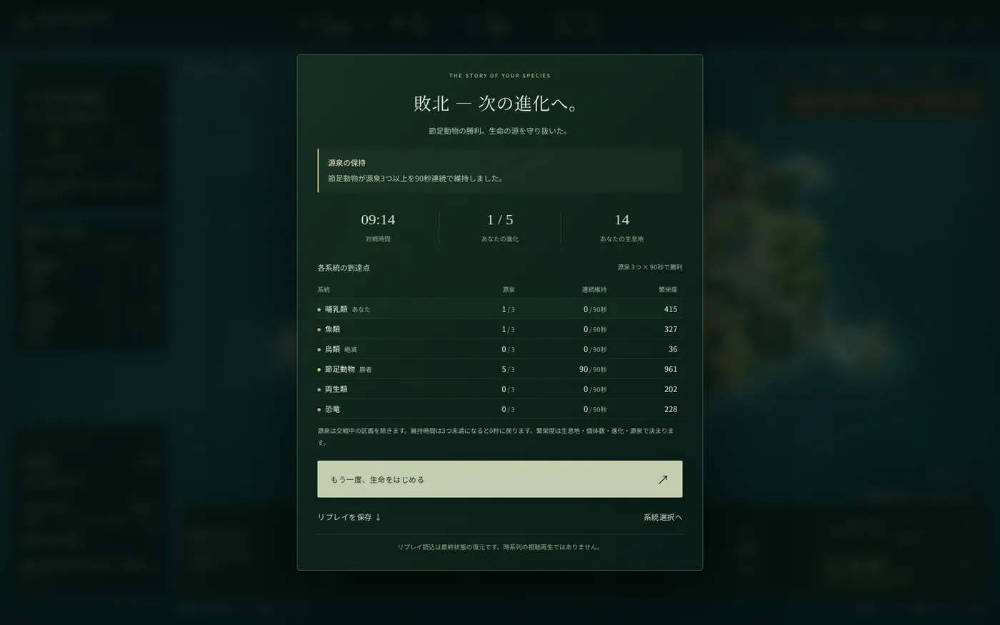
| 指標 | 哺乳類（敗） | 節足動物（勝） | どう効いたか |
|---|---|---|---|
| 誕生した個体 | 120体 | 115体 | 内政は勝っていた |
| 領土 | 14 | 51 | 拡張の方向が違った |
| 源泉 | 1 | 5 | これが勝敗のすべて |
| 進化段階 | ① 原始 | ⑤ 極相 | 鉱物を巣に使い切った |
| 占領した回数 | 20 | 80 | 攻めの絶対量が4倍 |
① 鉱物を巣の新設に回し続け、進化が一度も走らなかった。巣は収容数を増やすが、DNAがあっても鉱物30を残していなければ進化できない。
② 拡張の方向が源泉から外れた。安全な中立地ばかり取り、源泉は最初の1つで止まった。第4章のとおり、源泉1つではDNA収入も足りない。
③ 妨害をしなかった。画面には節足動物の保持秒数が33秒→89秒と表示され続けていた。この間に遊撃種を1体でも送っていれば、カウントは0に戻せた。
第2章の「採集種7体」は必要条件であって十分条件ではない。物量の上に、源泉へ向ける・進化を止めない・妨害するの3つを乗せて初めて勝ちになる。逆に言えば、この3つは採集種7体の土台がなければ実行する資源すら作れない——順番が大事なのだ。
負けパターン
- 序盤に戦闘役割を作りすぎる。最初の45秒は絶対に攻められない。ここで作った捕食種は、後半の100体ぶんの成長を食い潰す。
- 全数移動を繰り返して後方が無人になる。領土の数は増えているのに収入が増えない、という典型的な失速。
- 高地に拠点を作る。食料0.36/秒・収容12。第2章のラインを満たせず、繁殖が永久に詰まる。
- 遊撃種の大群で拠点に突っ込む。捕食種が1体でも混ざっていれば2.4倍で溶ける（実測：遊撃20が2.2秒で全滅）。
- 源泉3つを取って守りに入る。守勢に回った時点で、6勢力ぜんぶの妨害対象になる。カウントは1体でリセットされるので、守り切るより盤面を広げて4つ5つにするほうが速い。
- 「進化で勝つ」と決めて内政を絞る。実測で「進化を急ぐ」方針は採集7体方針より弱い（87.5% vs 100%）。進化は目的ではなく、余った資源の置き場所。
09図鑑と3Dモデルについて
攻略とは直接関係ないが、このゲームには 6系統 × 5段階 × 4役割 = 120形態 のメカ生物が入っていて、メニューの「進化図鑑」から全部を回転・拡大して見られる。GLB形式で書き出す機能もあり、Blender などにそのまま持っていける。
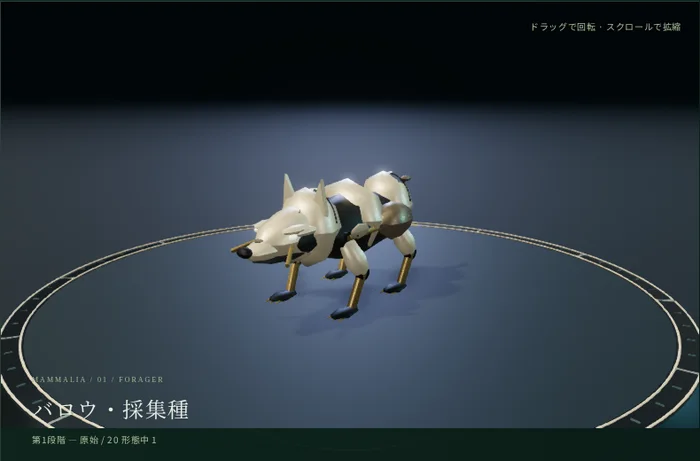
体長0.65倍、装甲なし
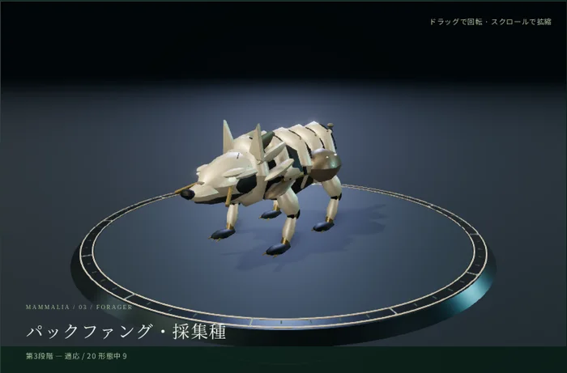
体節と装甲が増える
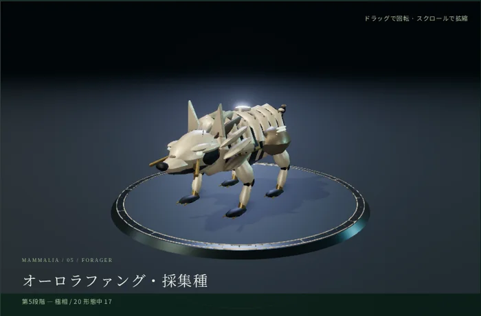
1.28倍、発光管と棘
形態名は系統ごとに固有で、たとえば魚類は リップル → リーフフィン → タイドランサー → アビスガード → リヴァイアサン、恐竜は スケイル → スプリントラプトル → リッジホーン → アーマーレックス → テラタイタン。段階が上がると骨格・装甲の密度・発光管が変化する。
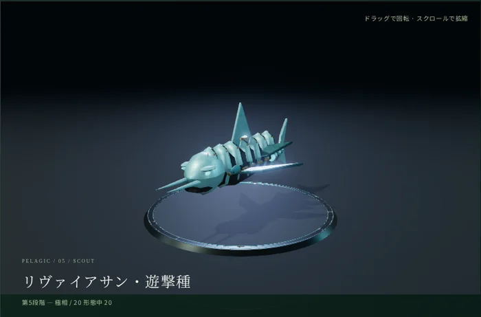
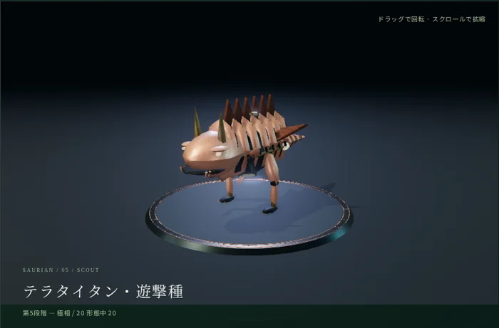
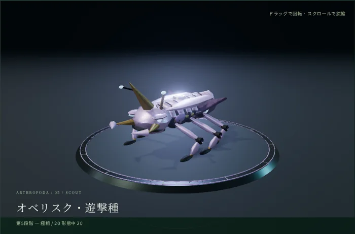
画面上部で「高画質／標準／軽量」を切り替えられる。ソフトウェアGPU環境では自動で「軽量」が選ばれる。設定を変えてもゲームのルール・モデル形状・判定はいっさい変わらないので、動作が重い場合は迷わず軽量にしてよい。この記事のスクリーンショットはすべて高画質で撮っている。